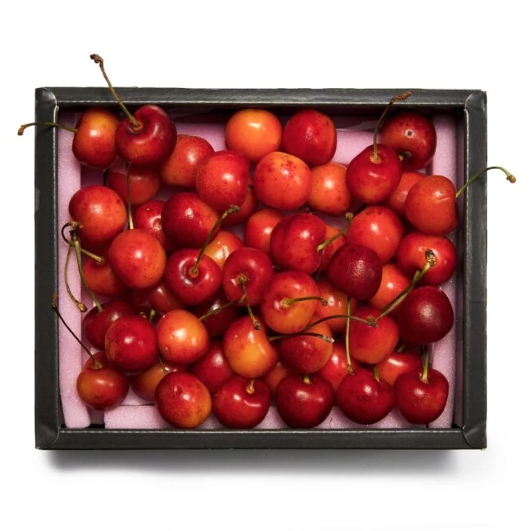
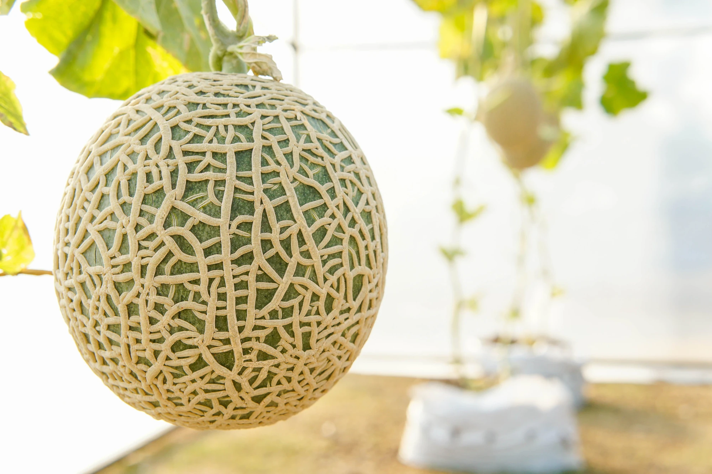
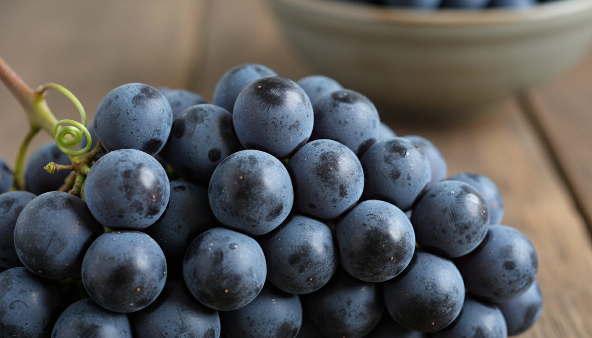

$is-category^

$end-head^

<div class="mef">
  <section class="$title">
    

    <h1 class="invert">Japanese Fruits</h1>
    <div class="title-content">
      <p class="invert">
        Grown with precision. Selected with care. Presented as nature intended.<br>
        Experience the finest Japanese fruits, renowned for their purity, flavour and beauty.
      </p>
    </div>
  </section>

  <section class="$blocks">
    <div class="side-block">
      <h2>Exceptional by nature</h2>
      <h3>A taste of luxury</h3>
      <p>
        Our prestigious Japanese range represents just a glimpse into what we offer. Renowned for their meticulous
        cultivation and flawless presentation, each piece is an experience in its own right.
      </p>
      <h3>Tried and trusted</h3>
      <p>
        We have been trusted by global luxury fashion houses, royalty and some of the world's most recognised names to
        source exceptional produce.
      </p>
    </div>
    <div class="$gallery hero-block">
      <div class="track">
        $ditto
        
        
        
        
        
        
        ditto^
      </div>
    </div>
  </section>

  <section class="$blocks">
    <div class="hero-block">
      
    </div>
    <div class="side-block">
      <h2>Why Japan?</h2>
      <p>
        In Japan, gifting fruit is a deeply rooted tradition expressing high respect and gratitude.
        These fruits are hand-grown with meticulous care
        to achieve flawless shapes, perfect sweetness and uniform colouring.
        They are elegantly boxed and presented like fine jewellery or vintage wine.
      </p>
      <p>The most prominent Japanese fruits used for gifting include:</p>

      <h3>
        <a>The Crown Melon</a>
      </h3>
      <p>
        Hand-massaged, single-stem musk melons grown in Hokkaido or Shizuoka, famous for their perfectly round shape and
        rich melt-in-your-mouth sweetness.
      </p>

      <h3>
        <a>The Pione Grape</a>
      </h3>
      <p>
        Pione grapes are highly prized in Japan and are frequently gifted in elaborate, cushioned boxes.
      </p>

      <h3>
        <a>The Miyazaki Mango</a>
      </h3>
      <p>
        Known as Taiyo no Tamago (Egg of the Sun), these ruby-red mangoes must hit strict weight and sugar thresholds
        and
        are highly prized.
      </p>

      <h3>
        <a>The Fuyu Persimmon</a>
      </h3>
      <p>
        A traditional autumn fruit given for its crisp, sweet and non-astringent flesh.
      </p>
    </div>
  </section>

  <section class="$blocks">
    <div class="side-block">
      <h2>The Pione Grape</h2>
      <p>
        Pione grapes are highly prized in Japan and are frequently gifted in elaborate, cushioned boxes.
      </p>
      <p>
        Often called “Black Pearls”, they are sought after for their massive, deep purple berries, incredibly high sugar
        content and a juicy, gelatinous texture with refreshing muscat undertones.
      </p>
      <p>
        Most Pione grapes sold today are the seedless “New Pione” variety, achieved using a natural gibberellin
        treatment. They are primarily cultivated in Japan’s Yamanashi, Nagano and Okayama prefectures. Because of their
        labour-intensive cultivation and strict quality controls, they are treated as luxury fruit.
      </p>
      <p>
        For the best tasting experience, they should be chilled in the refrigerator, peeled before eating, and are
        popular both fresh and incorporated into premium Japanese desserts like mochi and fruit tarts.
      </p>
      <p>
        These grapes are truly amazing. Your taste buds will go wild!
      </p>
    </div>
    <div class="hero-block">
      
    </div>
  </section>

  <section class="$blocks">
    <div class="side-block">
      
    </div>
    <div class="hero-block">
      <h2>The Miyazaki Mango</h2>
      <p>
        Miyazaki mangoes are prized for their intensely sweet, almost candy-like flavour, completely fibreless flesh,
        and
        a creamy, melting texture. Often compared to high-end fruit jellies, they pack a rich, tropical fragrance with a
        perfect balance of sweetness and minimal acidity.
      </p>

      <h3>The Miyazaki experience</h3>
      <p>
        Grown in Japan under highly regulated greenhouse conditions, this luxury “Egg of the Sun” mango offers several
        distinct characteristics.
      </p>


      <h3>Texture</h3>
      <p>The golden-yellow flesh is remarkably smooth, creamy and practically melts in your mouth.</p>


      <h3>Flavour profile</h3>
      <p>
        They are incredibly sweet (often exceeding 15 degrees Brix), delivering a rich, citrusy and floral flavour with
        almost no tartness.
      </p>


      <h3>Aroma</h3>
      <p>They carry a distinct perfume that is noticeable as soon as the fruit is sliced.</p>
      <p>
        Grown in Japan's Miyazaki Prefecture, farmers wrap individual mangoes in nets to ensure they naturally detach
        when
        perfectly ripe. Only about 10% meet the strict Taiyo no Tamago (“Egg of the Sun”) criteria for weight, flawless
        skin and sugar content.
      </p>
    </div>
  </section>

  <h2>Price factors</h2>
  <p>
    <b>Meticulous cultivation:</b>
    Trees are grown in climate-controlled greenhouses with carefully monitored ventilation and temperature. Each
    fruit
    is manually massaged and rotated to ensure even, vibrant red colouring.
  </p>

  <p>
    <b>Strict quality standards:</b>
    To earn the premium classification, every mango must weigh at least 350 grams, possess a sugar content of 15% or
    higher and have a deep, vibrant red skin with zero blemishes.
  </p>

  <p>
    <b>Luxury gifting culture:</b>
    In Japan, flawless fruits are highly sought-after as luxury gifts for business associates or special occasions.
    Premium specimens are frequently sold at wholesale auctions, with record pairs fetching up to 500,000 yen
    (roughly $4,000).
  </p>

  <p>
    <b>High scarcity:</b>
    The extensive effort required to produce these fruits ensures the yield remains extremely limited
  </p>
</div>

$end-body^